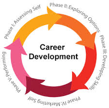
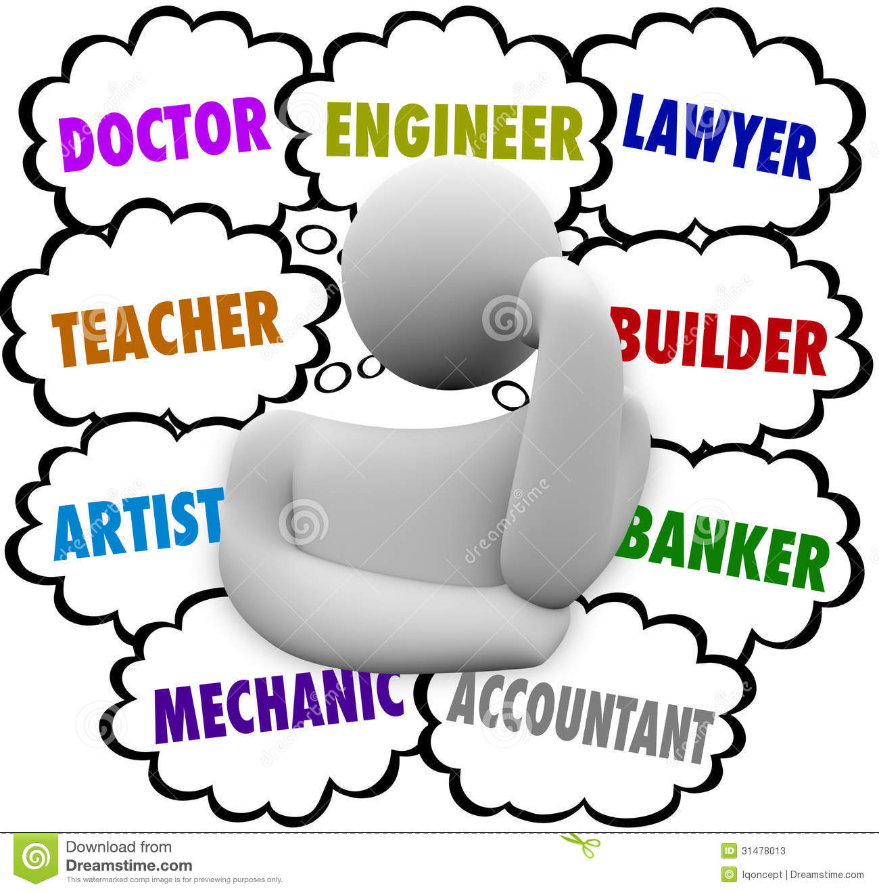

At Barking & Dagenham College (BDC) you will benefit from the very best in education and skills training to make sure that you, or the young person in your family.
Click here to visitEver felt lost confused about your future? Ever dreamed of being in a different career and unsure of what direction to go.....well not know more. Our aim of building this website was so we could enter a Duke a York awards and prove that we had what it takes to build and develop and digital web application. We dreamed it we learn the skills and techniques and now we can further our career. We believe the key to success is having the ability to recognise the change, the knowledge to change and the motivation to deliver them.
Whether you're looking for your first job or wanting to change career, there are a number of things you can do that can help you make the best decision. Firstly, get to know yourself - your strengths, values, interests and ambitions. Next, do your research on your chosen job - make sure you know as much as you can about what the job's really like and if it's the right job for you. Finally, get some advice from a professional - there might be other options or funding schemes open to you that you didn't know about. And it always helps to have someone impartial as a sounding board to check if you're doing the right thing. Our guides below can help you to change or choose a career. There's advice for you if you've just started to think about making a change or if you're looking for some last minute checks before you take the leap.
Creating a job skills development plan is a useful strategy for achieving professional growth. The ideal plan identifies long-term goals and outlines a detailed approach for developing job skills. A professional development plan may be created by a supervisor who works closely with his employee. Career counselors use job skills development plans to help clients achieve their career aspirations. New college graduates and career seekers can develop their own plans. 
Asking "what career is right for me?" is one of the most important decisions you will ever make. If you find the right career, you will have success, happiness and prosperity for many years to come. There are many things to take into account when choosing a career, such as your personality, skills, values and ambitions. The most important question is whether you will enjoy it, which is where a careers test can help.
These links include many resources, services, and tools which assist users in exploring careers, planning for the future, searching for employment, and finding the additional training necessary to pursue a dream. Most of these resources are free, and several were developed in countries other than the United States. This is a mere sample of what is available online, but it can serve as a starting point for career counselors or for career-seekers.. 
Decision-making is a key skill in the workplace, and is particularly important if you want to be an effective leader. Whether you're deciding which person to hire, which supplier to use, or which strategy to pursue, the ability to make a good decision with available information is vital. It would be easy if there were one formula you could use in any situation, but there isn't. Each decision presents its own challenges, and we all have different ways of approaching problems.